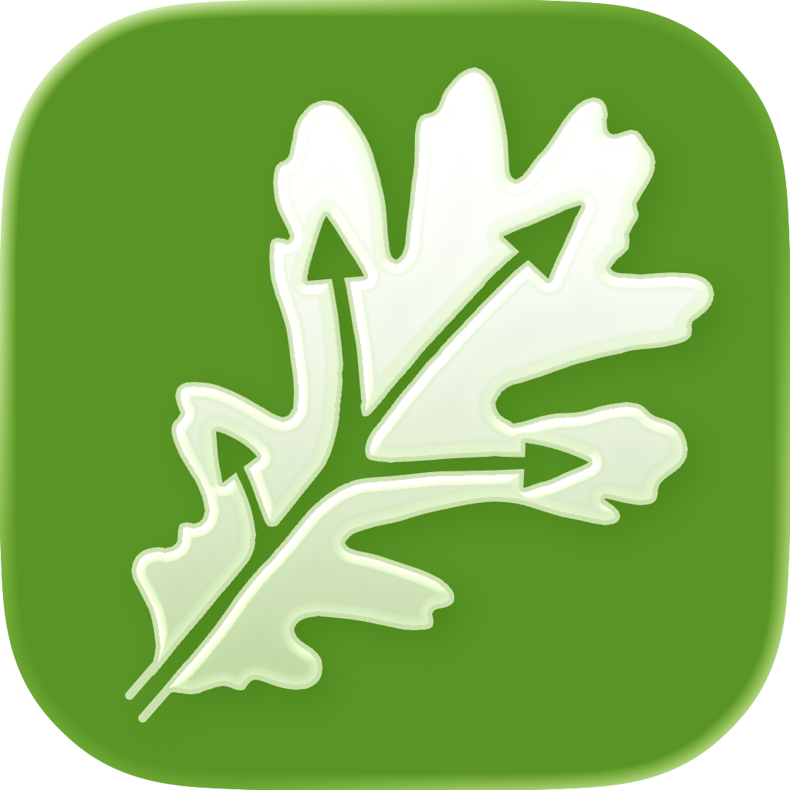
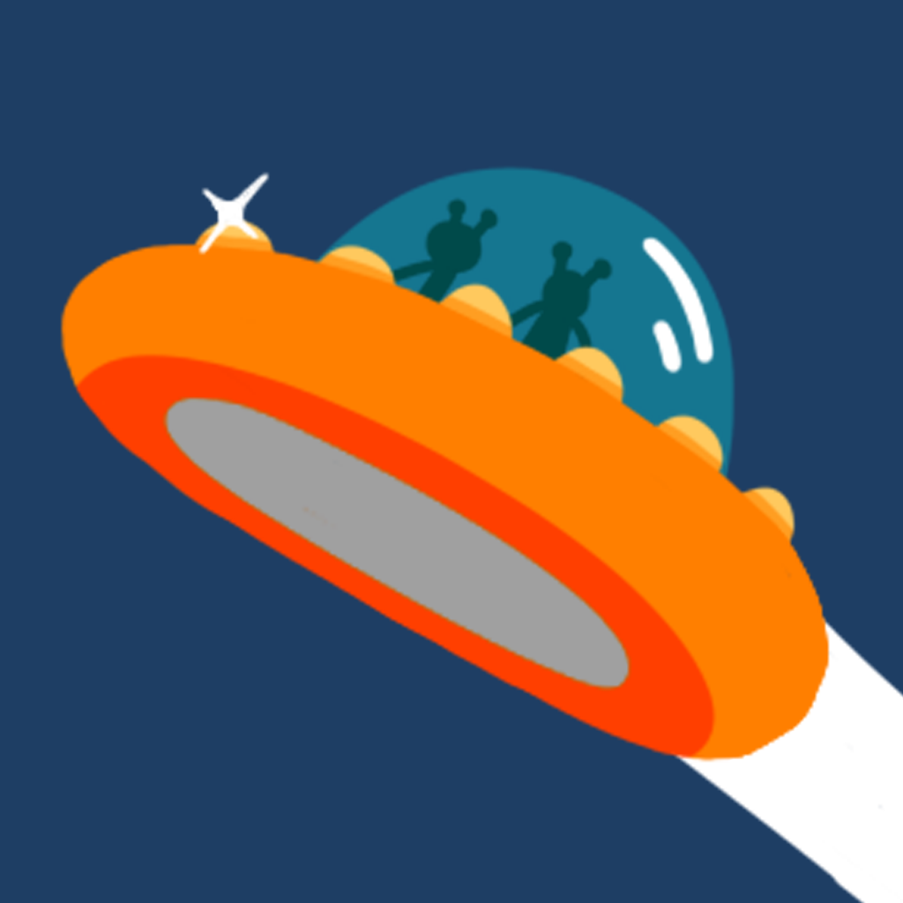
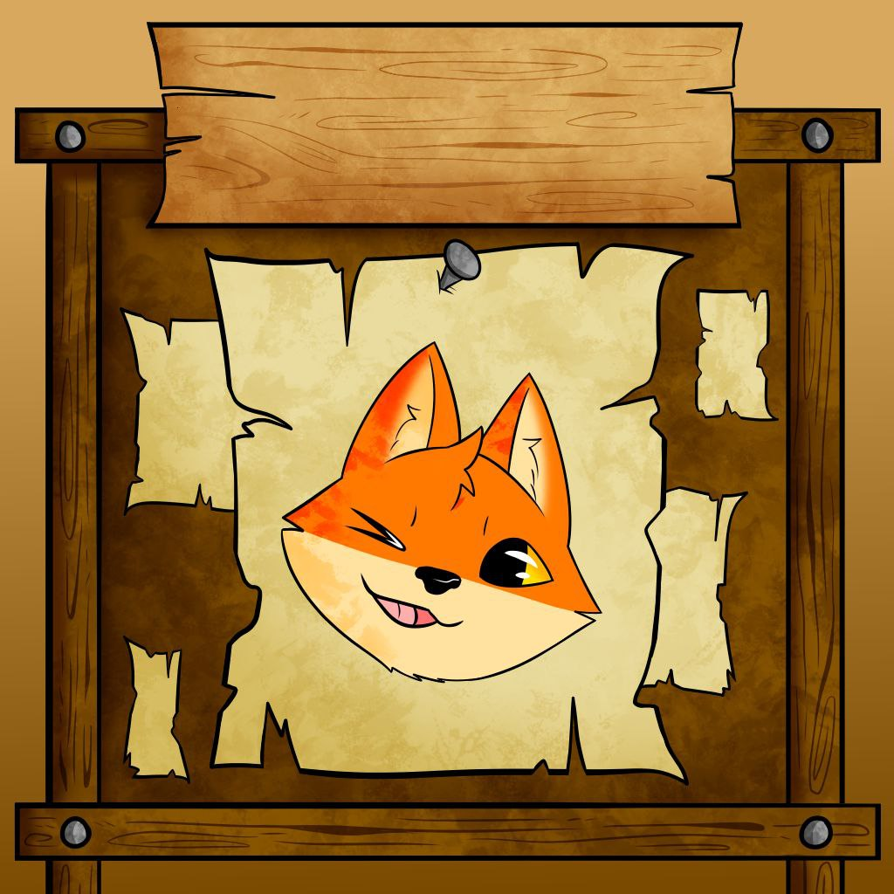

Selected work
Projects

RealGO
An interactive navigation app for the Real Bosco of Capodimonte that uses smart real-time routing to ensure a seamless, accessible, and stress-free exploration of the park’s historic paths.

ToGocchi
A modern, accessible virtual pet in pixel art that you can raise and share with your partner, featuring seamless iCloud synchronization to keep your companion always in sync.

Galactic Grades
An interactive, gamified math adventure for iPad that transforms arithmetic into a space mission, allowing kids to solve problems naturally using Apple Pencil handwriting input.

Questboard
A fantasy RPG-themed task manager designed to combat ADHD by turning custom daily goals into character-leveling quests.